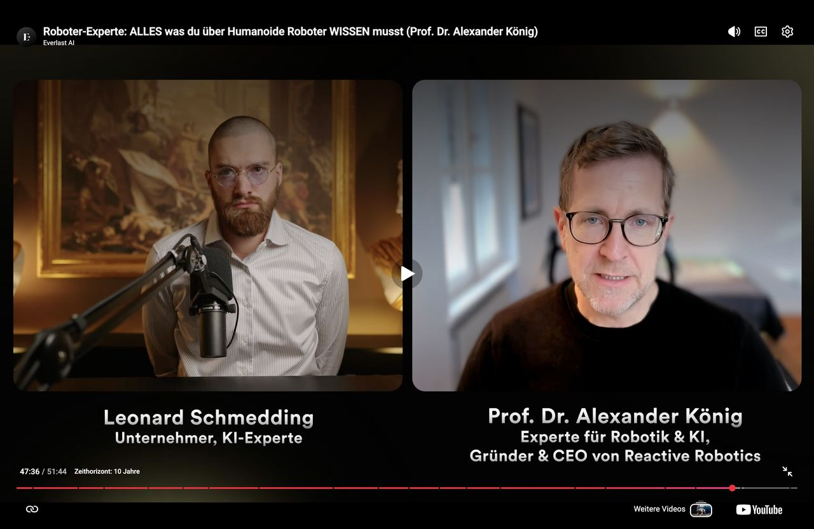

Alexander König
Wikipedia ›
Professor für Robotik und verkörperte KI an der TU München.
Gründer und ehemaliger CEO eines Robotikunternehmens.
Von der Forschung über die Gründung bis zur Skalierung.
Professor für Robotik und verkörperte KI an der TU München.
Gründer und ehemaliger CEO eines Robotikunternehmens.
Von der Forschung über die Gründung bis zur Skalierung.
Was kommt auf uns zu?
Am Lehrstuhl für Robotik und Systemintelligenz an der TU München arbeite ich mit 37 Wissenschaftlern an Robotik und verkörperter Künstlicher Intelligenz — an dem, was in fünf bis zehn Jahren Realität sein wird. Ich sehe, was funktioniert und was nicht, bevor es in der Zeitung steht.
Kung-Fu-Roboter aus China, Tesla Optimus, Figure — was davon ist Durchbruch und was ist Show? Ich ordne ein, was Unternehmen wirklich wissen müssen.
Mit dem Pflegeroboter Garmi erforschen wir, wie Robotik älteren Menschen ein selbstbestimmtes Leben ermöglicht — eine Antwort auf die drängendste Frage unserer Gesellschaft.
Als Fellow der Konrad Zuse School of Excellence forsche ich an KI, der man vertrauen kann — besonders dort, wo es um Menschenleben geht.
Was funktioniert heute schon?
Ich habe Reactive Robotics gegründet und acht Jahre lang als CEO geführt — von der Idee im Labor bis zum zugelassenen Medizinprodukt auf Intensivstationen in fünf Ländern. Ich weiß, was es kostet, Technologie auf den Markt zu bringen.
Über mehrere Runden aufgebaut, mit internationalen Investoren.
Klasse-IIa-Medizinprodukt. Von der Entwicklung bis zur Zulassung in EU und USA.
Als Techstars EIR, Siemens Next47 Coach und Berater im Bundestag.
Vorträge & Impulse
Jede Geschäftsleitung fragt sich: Wann wird Robotik für uns relevant? Was sollten wir jetzt tun — und was lieber lassen? Ich gebe Antworten, die auf Forschung und eigener unternehmerischer Erfahrung basieren.
Seit den tanzenden Robotern aus China fragt sich jedes Unternehmen: Werden wir abgehängt? Was funktioniert wirklich — und was ist nur Show?
Was ich als Professor beim Aufbau eines Robotikunternehmens gelernt habe — über Technologie, Teams, Investoren und Scheitern.
Wie Roboter uns helfen, in Würde zu altern. Über Garmi, die Pflegekrise und Technologie als Partner — nicht als Ersatz.
Frühere Vorträge
Kundenevents, Führungskräfte-Offsites, Fachkonferenzen und Strategietage — in der Versicherungsbranche, Automobilindustrie, Medizintechnik und darüber hinaus.
Zuletzt u.a. am ifo Institut zum Thema „Robotik für den demografischen Wandel" — darüber, wie Robotik aus dem Labor in die Realität gebracht werden kann, um Wert für die Gesellschaft zu schaffen.

Kontakt
Interesse an einem Vortrag, Workshop oder Austausch?